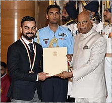

NATIONAL HONORS
* 2013- Arjuna Award
* 2017- Padma Sri
* 2018- Rajiv Khel Ratna
SPORTING HONOURS
* Sir Garfield Sobers Trophy (ICC Cricketer of the Year): 2017
* ICC ODI Player of the Year: 2012, 2017, 2018
* ICC Test Player of the Year: 2018
* ICC ODI Team of the Year: 2012, 2014, 2016 (captain), 2017 (captain), 2018 (captain), 2019 (captain)
* ICC Test Team of the Year: 2017 (captain), 2018 (captain), 2019 (captain)
* ICC Spirit of Cricket :2019
* Polly Umrigar Award for International Cricketer of the Year: 2011–12, 2014–15, 2015–16, 2016–17, 2017–18
* Wisden Leading Cricketer in the World: 2016, 2017,2018
* CEAT International Cricketer of the Year: 2011–12, 2013–14, 2018-19
* Barmy Army - International Player of Year: 2017, 2018-19
* A stand at Arun Jaitley Stadium is named Virat Kohli Stand on 12 September 2019